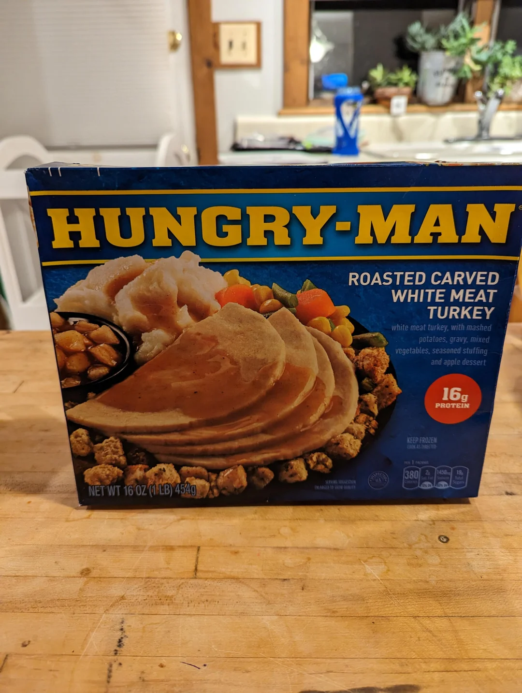

Home
Hungry Man Frozen Dinner
Roasted Carved White Meat Turkey

Description
In the darkest hour of your darkest days, Hungry Man shines upon you like a beam of holy light.
Use recipe with caution.
Ingredients
- 1 Hungry Man Frozen Dinner: Roasted Carved White Meat Turkey
- 1 microwave
- 1 hungry man
Steps
- Remove film from dessert. Slit film over turkey. Cook on HIGH 5 minutes.
- Stir potatoes and stuffing and rearrange turkey; re-cover film.
- Cook an additional 3.5 to 4 minutes.
- Check that food is cooked thoroughly. HANDLE CAREFULLY; IT'S HOT! Let stand 1 minute; stir potatoes and enjoy!
- The hungry man is now satisfied.